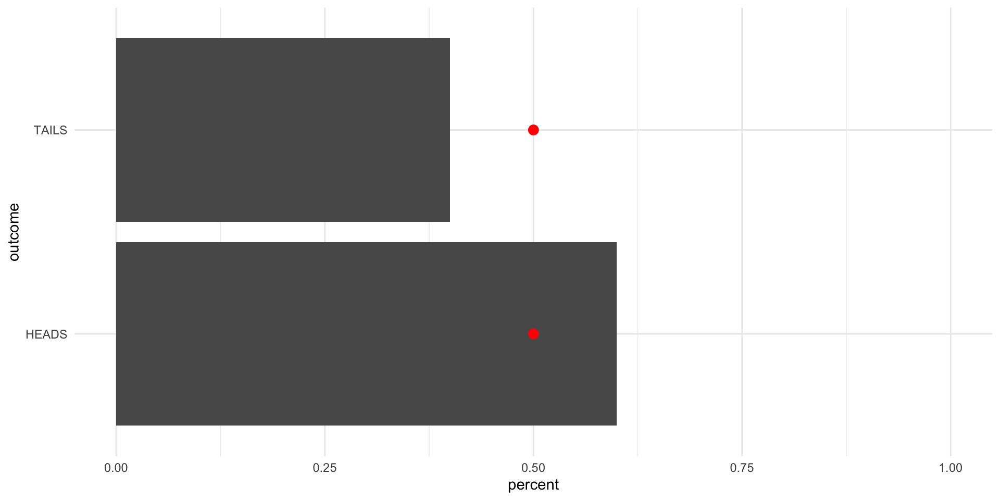
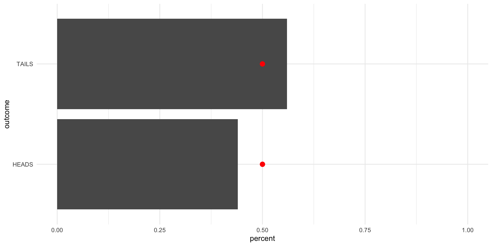
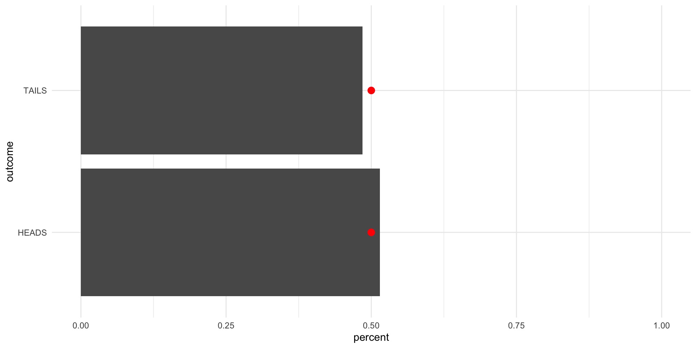
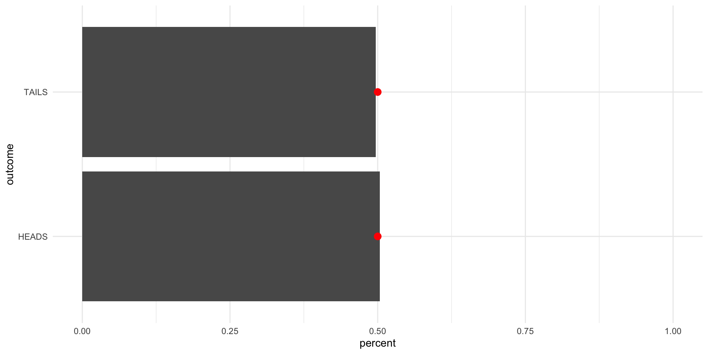

library(tidyverse)
library(janitor)
set.seed(1234)Probability Theory
Readings
Class
Pollock & Edwards, Chapter 5
Lab
Pollock & Edwards R Companion, Chapter 6
Section
Prerequisites
Note
Today, we are working with randomness and chance. To make sure we are all working with the same randomness and chance, you need to set your seed! set.seed() sets the random number generator state in which R will operate for this session. The draws we make in the session are still random, but they will be the same random draw each time we take it. This is important for replication, so you will use it outside of class.
Randomness and avoiding doing the dishes
Imagine you and a friend are trying to decide who will do the dishes after you have both cooked a very large and very messy meal. You agree to flip a coin. Should you pick heads or tails?
You really don’t want to do the dishes. Therefore, you want to maximize your chances of winning the coin flip. If you could predict the outcome of the coin flip with certainty, you would simply pick the winning side. Even if you don’t know for certain which side will land on top, you want to pick the side that has the highest chance of winning. How can you work this out?
First, you need to work out all the possible outcomes. This task is simple for a coin flip: heads or tails.
possible_outcomes <- c("HEADS", "TAILS")
possible_outcomes[1] "HEADS" "TAILS"Then, you need to work out how likely each of those outcomes are to eventuate. How can we do this? One option available to us here is repeated trials. Flip your coin many times and record how many heads and tails you get. This provides you with a rough understanding of the chance that your coin will land on heads or tails for any given flip.
For example, you can flip the coin 10 times and record the results of each flip.
repeat_trials <- sample(possible_outcomes, size = 10, replace = T, prob = c(0.5, 0.5))
repeat_trials [1] "TAILS" "HEADS" "HEADS" "HEADS" "HEADS" "HEADS" "TAILS" "TAILS" "HEADS"
[10] "HEADS"
Tip
We want to sample with replacement, so we include the argument replace = T. This just means that we include all possible outcomes in every draw. If we sampled without replacement, we would remove each outcome from the sample after it has been selected in a previous draw.
For example, imagine you have 10 different colored marbles in a bag. You pull out a marble and record its color. If you want to sample with replacement, you put the marble you just pulled out back into the bag before you take your next draw. This means that you can draw that same marble out again in the subsequent draws.
You can then tally up those results to get your baseline understanding of the chances of heads vs tails.
table(repeat_trials)repeat_trials
HEADS TAILS
7 3 Given the results of this trial, I would expect that for every 10 coin flips, I should get 7 heads and 3 tails. If I want to use this information to determine the chance that the coin will land on its head after one flip, I can convert this to percentages. There is a 70% chance that the coin will land on heads. Therefore, based solely on the 10 flip trial, you should pick heads.
Hmm… but aren’t fair coins meant to land on heads or tails with equal probability? In fact, if you look back to our sample (drawn using the sample() function) you will see that I explicitly set the probability of landing on heads and tails to be an even 0.5 and 0.5 each (using the prob argument). Why then are we getting 70% for heads and 30% for tails instead of 50% and 50%?
To answer this question, we need to build up some foundations in probability theory. Let’s start with independence.
Independence
You want to maximize your chances of not doing the dishes (i.e. of picking the winning side of the coin). To do this, you need to know all possible outcomes (heads and tails) and the probability that each of those outcomes will eventuate. To learn this, you ran a trial in which you flipped the coin 10 times and recorded the outcome of each flip. How can you trust that this trial is revealing the true underlying probabilities of heads vs. tails?
Each time you flipped that coin, you undertook the very process you will eventually take to decide who has to do the dishes. You will only flip that deciding coin once, so you need to know what the chances are that the coin will land on heads or tails that one time. You can’t ever observe that. If you flip a coin once, you will either see heads or tails. But we know that if we flip it again we might get a different outcome. In other words, if you flip a coin once and it lands on heads, this does not necessarily mean that the probability of getting heads is 1 and the probability of getting tails is 0 (or that you will always get heads). We use trials to try to estimate the unobservable underlying probabilities of each possible outcome of a single coin flip.
To make sure that we can infer from our observed flips the underlying and unobservable probability of heads vs. tails of one coin flip, we need to make sure that our trials meet certain conditions. The first is independence: the outcome of any other flips cannot impact the outcome of the current flip.
For example, let’s go back to our bag of 10 different marbles. Say there are 2 red, 3 blue, and 5 green marbles in your bag. You want to know the probability of drawing out a green marble. You pull out a marble. We know that there is a 20% chance your marble will be red, a 30% chance it will be blue, and a 50% chance it will be green. It is green. You then do not replace the marble before your next draw. Now, there is a 22% chance that marble will be red, a 33% chance it is blue, and a 44% chance it will be green (there are now only nine marbles in your bag: 2 red, 3, blue, and 4 green). These draws are not independent of each other! Your first draw changed the underlying probability of drawing a green marble in your second draw.
If your draws are independent of one another, you can infer from the results of the trial the underlying probability of each outcome eventuating.
But hold on: we did that and we still got uneven results!
table(repeat_trials)repeat_trials
HEADS TAILS
7 3 Why?
The law of large numbers
In short, our trial was too small.
Even if our underlying probability is {0.5, 0.5} (which it is: remember that prob = c(0.5, 0.5) argument), we may observe a set of outcomes in our trial that do not reflect this true distribution.
To illustrate, think of the outcome you could observe from only one draw: heads or tails. If you draw heads and then use that trial to infer the underlying probability of drawing heads vs. tails, you will state that the underlying probability of drawing a head and tail is equal to {1, 0}. You will be very surprised if you subsequently flip a tail.
Now, what if you run a trial of two flips?
sample(possible_outcomes, 2, replace = T, prob = c(0.5, 0.5))[1] "HEADS" "HEADS"Both heads!
In fact, if we flip a coin twice many times (say, 10 times), we will probably get a couple of trials in which we flip two heads or two tails:
trial_two_flips <- tibble(trial = 1:10) |>
rowwise() |>
mutate(outcome = list(sample(possible_outcomes, 2, replace = T, prob = c(0.5, 0.5)))) |>
unnest_wider(outcome, names_sep = "_") |>
rename("flip_1" = outcome_1, "flip_2" = outcome_2)
trial_two_flips# A tibble: 10 × 3
trial flip_1 flip_2
<int> <chr> <chr>
1 1 TAILS HEADS
2 2 TAILS HEADS
3 3 TAILS TAILS
4 4 TAILS TAILS
5 5 TAILS TAILS
6 6 TAILS TAILS
7 7 TAILS HEADS
8 8 HEADS HEADS
9 9 HEADS TAILS
10 10 TAILS TAILS 6 or 60% of our 10 trials resulted in two of the same outcomes. How can we be confident that our trials are good reflections of the actual distribution of probabilities?
The law of large numbers suggests that when your population of independent observations has a finite mean, as the number of observations drawn increases, the mean of the observed values in the sample approaches the mean of the population.
In other words, the more flips you do, the closer you will get to the true underlying distribution of probabilities. Cool!
Let’s try this out.
First, let’s flip the coin 10 times:
Note
The red dots are sitting at {0.5,0.5}. We are aiming for this true probability distribution.
tibble(outcome = sample(possible_outcomes, 10, replace = T, prob = c(0.5, 0.5))) |>
tabyl(outcome) |>
ggplot(aes(y = outcome, x = percent)) +
geom_col() +
geom_point(aes(x = c(0.5, 0.5)), size = 3, colour = "red") +
theme_minimal() +
scale_x_continuous(limits = c(0, 1))
Now, let’s flip it 100 times:
tibble(outcome = sample(possible_outcomes, 100, replace = T, prob = c(0.5, 0.5))) |>
tabyl(outcome) |>
ggplot(aes(y = outcome, x = percent)) +
geom_col() +
geom_point(aes(x = c(0.5, 0.5)), size = 3, colour = "red") +
theme_minimal() +
scale_x_continuous(limits = c(0, 1))
Now, let’s flip it 1,000 times:
tibble(outcome = sample(possible_outcomes, 1000, replace = T, prob = c(0.5, 0.5))) |>
tabyl(outcome) |>
ggplot(aes(y = outcome, x = percent)) +
geom_col() +
geom_point(aes(x = c(0.5, 0.5)), size = 3, colour = "red") +
theme_minimal() +
scale_x_continuous(limits = c(0, 1))
Now, let’s flip it 10,000 times:
tibble(outcome = sample(possible_outcomes, 10000, replace = T, prob = c(0.5, 0.5))) |>
tabyl(outcome) |>
ggplot(aes(y = outcome, x = percent)) +
geom_col() +
geom_point(aes(x = c(0.5, 0.5)), size = 3, colour = "red") +
theme_minimal() +
scale_x_continuous(limits = c(0, 1))
Finally, let’s flip it 100,000 times:
tibble(outcome = sample(possible_outcomes, 100000, replace = T, prob = c(0.5, 0.5))) |>
tabyl(outcome) |>
ggplot(aes(y = outcome, x = percent)) +
geom_col() +
geom_point(aes(x = c(0.5, 0.5)), size = 3, colour = "red") +
theme_minimal() +
scale_x_continuous(limits = c(0, 1))Each time we increase the number of draws we make, we get closer to the true underlying distribution of probabilities (as coded in our sample() function).
So, after all of that how can you avoid doing the dishes? Sadly (and as expected) you cannot get an edge on your friend. All possible outcomes have the same probability of eventuating.
Conditional probability
Will it rain tomorrow? To answer this question, you may want to gather information about rain trends over time.
You may look at the number of times it rained this month last year. Say this is the record of rain days this month last year:
month_rain <- tibble(
day_of_month = 1:30,
rain = c(0, 1, 1, 1, 0, 0, 0, 1, 1, 0,
0, 0, 0, 0, 0, 0, 0, 0, 1, 1,
0, 0, 0, 0, 0, 0, 0, 0, 0, 0)
)
month_rain# A tibble: 30 × 2
day_of_month rain
<int> <dbl>
1 1 0
2 2 1
3 3 1
4 4 1
5 5 0
6 6 0
7 7 0
8 8 1
9 9 1
10 10 0
# ℹ 20 more rows
Tip
rbinom() allows us to take a random draw from 0 and 1.
One way you could answer this question is working out the probability of rain across that month. On what proportion of days that month did it rain?
tabyl(month_rain, rain) rain n percent
0 23 0.7666667
1 7 0.2333333Using this information, we may guess that there is a 23% chance of rain on any given day in this month. Therefore, you predict that it will not rain tomorrow.
But what if you notice that it tends to rain multiple days in a row? In other words, the chance of rain tomorrow is higher if it rains today. You can use this information to more accurately predict whether it will rain tomorrow. Instead of looking at all days in the month, you can look only at the days of the month that were preceded by rain days:
month_rain |>
filter(lag(rain) == 1)# A tibble: 7 × 2
day_of_month rain
<int> <dbl>
1 3 1
2 4 1
3 5 0
4 9 1
5 10 0
6 20 1
7 21 0On what proportion of these days did it rain?
month_rain |>
filter(lag(rain) == 1) |>
tabyl(rain) rain n percent
0 3 0.4285714
1 4 0.5714286Using this information, you determine that it rained on 57% of days that were preceded by rain days. If you are currently rugged up in front of a fire enjoying watching a storm raging outside your window, you will predict that there is a 57% chance of it raining tomorrow. You, therefore, predict that it will rain tomorrow.
Conditional probability can help us use all the information we have about the conditions under which an event will occur to update our beliefs about the likelihood of that event occurring.
A note on different ways to think about probability
It can sometimes help to be introduced to different ways of thinking about these concepts. There are two common approaches to understanding probability: frequentist and Bayesian. Frequentists interpret probabilities as the proportion of an event occurring over an infinite number of identical trials. Therefore, if the probability of getting a head when you flip a fair coin is 50%, this is simply the proportion of times that we would get a head if we flipped a coin infinitely many times. We have adopted the frequentist approach throughout this session.
Bayesians interpret probability differently. They interpret probability to be your belief about the relative likelihood of an event occuring. Your belief is informed by your knowledge of the event and your observations of what has happened in the past.
To illustrate, let’s consider how what each of these schools would predict in a coin flip.
A frequentist and a Bayesian walk into a bar. I ask them to predict the outcome of a coin flip. This coin may, or may not, be fair.
Before I flip the coin, I ask each to predict the outcome. The frequestist refuses to provide a prediction: they will wait until I have flipped the coin many times and they have observed the outcome of those flips to provide me with their guess. The Bayesian, on the other hand, happily offers up a prediction: heads. When I ask them why, they say that they think that assuming the coin is fair is a good starting point. The majority of coins in the world are fair coins and they have met me before and think that I am a trustworthy person. Assuming the coin is fair, they randomly decide to predict heads.
I then flip the coin and let the two observe the outcome:
[1] "TAILS"I ask the two if they want to update their predictions. Again, the frequentist refuses, saying that they do not have enough information to make a prediction.
The Bayesian considers. Their prior assumption was that the coin is fair: there is a 50% chance the coin will land on heads and a 50% chance the coin will land on tails. They have now observed a tails. This does not rule out the possibility that the coin is fair. Nor does it rule out the possibility that the coin is unfair and will always land on tails. It does; however, rule out the possibility that the coin will always land on heads. If that were the case, we would never observe tails. On balance, they decide to update their belief about the likelihood of the coin landing on tails to slightly higher than before. They now suggest that the coin will land on tails with a 55% chance.
I flip the coin again:
[1] "TAILS"Tails again! The frequentist is still not happy to provide a prediction. The Bayesian thinks again. They increasingly believe that the coin is not biased towards heads. They update their belief again, suggesting that the coin will land on tails with a 60% chance.
The frequentist is getting annoyed and asks me to flip the coin a hundred times:
HEADS TAILS
29 71 We now have 102 data points: the two prior flips and the 100 most recent flips. Of those 102 flips, 69 have been tails and 33 have been heads. The Bayesian updates their beliefs once again: based on both their prior and the distribution of observed flips, they believe that the coin has a 65% chance of landing on tails.
The frequestist is now willing to make a prediction: they infer from the outcome of these 102 flips that the coin will land on tails 68% of the time. They therefore predict that the next flip will land on tails, but would like me to flip the coin many more times before they are confident in that inference. I oblige:
HEADS TAILS
300190 699810 Flipping the coin an additional 1 million times provides the two statisticians with 1,000,102 data points. The Bayesian updates their beliefs based on their prior assumption (an even coin) and these 1,000,102 observed outcomes. They believe that there is a 70% chance that the coin will land on tails. They predict tails.
The frequestist will now make a confident prediction. They infer from the outcome of these 1,000,102 flips that the coin will land on tails 70% of the time. They therefore predict that the next flip will land on tails. They think that they will be right 70% of the time.
What does this all have to do with political science?
Fair question.
Quantitative social science involves statistical inference. We start with a parameter of interest. For example, what proportion of US voters approve of Joe Biden’s job as president? It would be very nice if we could go and ask all US voters what they think and if we could be confident that they are giving us their true opinions. However, this is simply not possible (even the census misses some people!). Instead, we rely on surveys.
These surveys (if done well) will take a representative sample of the population of US voters and ask their opinion of Biden. We can then use that sample to infer the overall level of support for Joe Biden among the population (of US voters). Think of a survey as a trial.
We can even use this sample to answer interesting questions about groups within the population. What do Republicans think about Joe Biden’s job as president? What about women? Or people of color?
This is all statistical inference. Probability theory undergirds our ability to observe or measure variables of interest and use these variables to strengthen our arguments in support of our theory. We will discuss this in more detail next week.